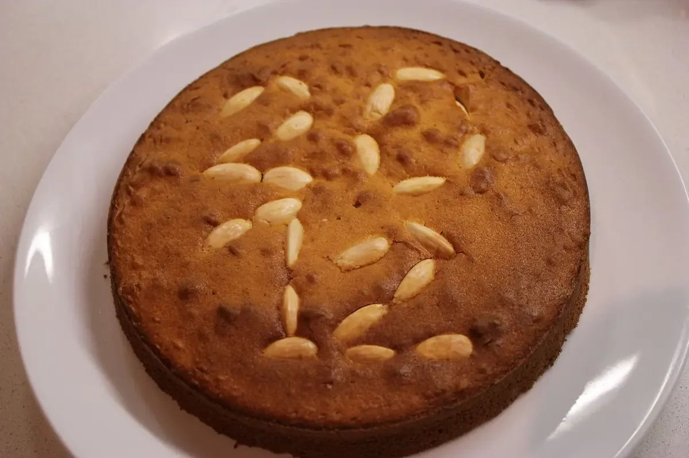
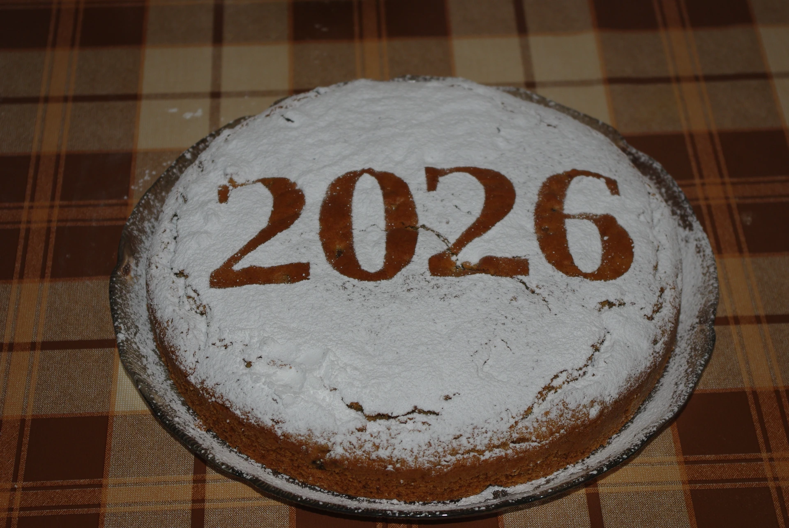
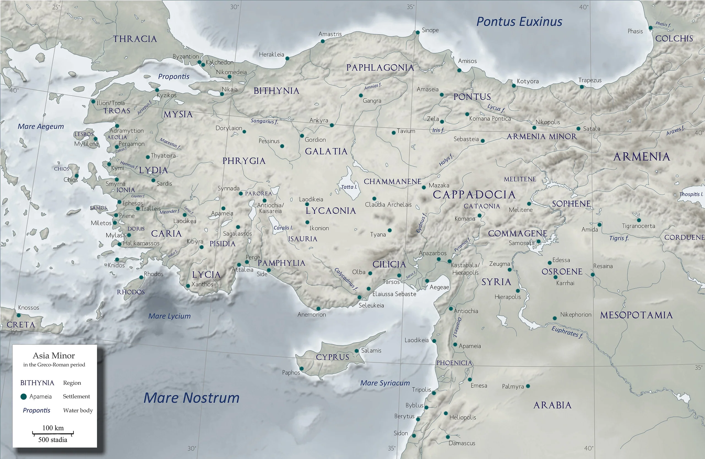
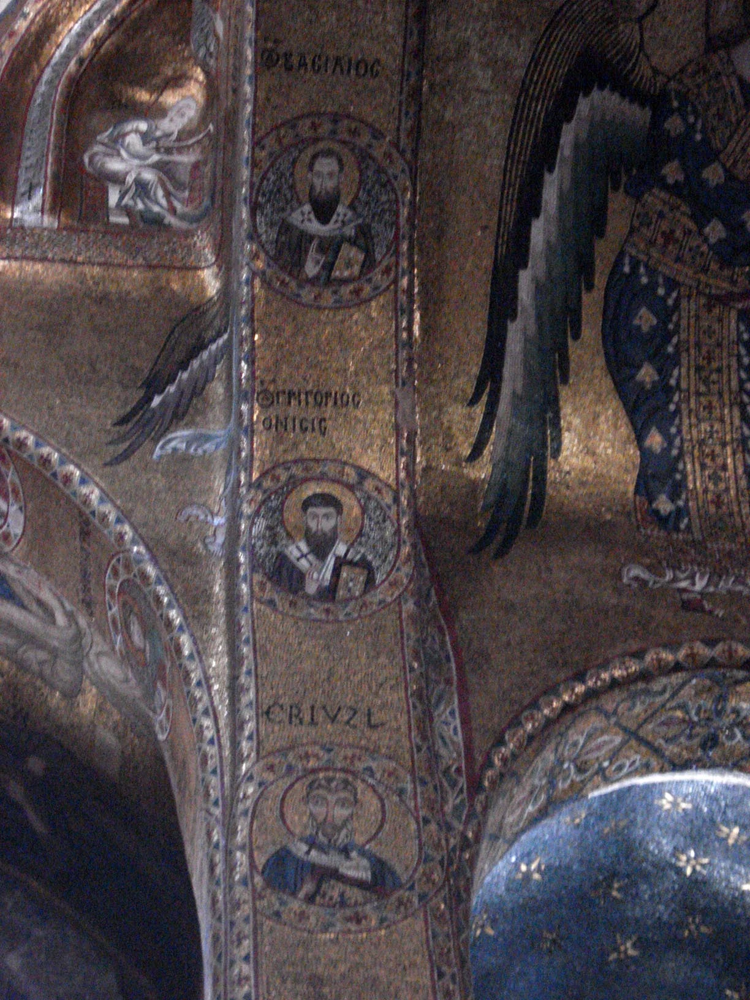

아직 펼치지 않은 카드성탄 밤의 식탁 · 5바실로피타그리스에서는 새해 첫날 동전을 숨긴 빵을 잘라요. 동전이 든 조각을 받은 사람은 어떻게 될까요?빵 속에 동전이 숨어 있대! 누가 찾을까?
329~379년 · 그리고 오늘의 새해 첫날카파도키아의 카이사레아(지금 튀르키예 카이세리) · 그리스
바실로피타
새해 첫날 그리스 식탁의 빵, 바실로피타. 그 이름의 주인 바실리우스는 실제로 살았던 사람이에요. 지도 위에서 그가 오간 길을 따라, 큰 기근이 든 고향 카이사레아에 닿아 보세요.
새해 첫날 동전을 숨긴 빵을 잘라. 이 빵 이름의 주인공 바실리우스 아저씨가 다닌 길을 지도에서 따라가 볼까?
검수 전 시안이에요(기준서 1판). 바실리우스의 삶은 친구 그레고리오스의 추도사와 바실리우스의 편지, 브리태니커를 따랐어요. 동전과 빵 이야기는 전해지는 이야기라고 밝혔고, 지도 위 점의 자리는 어림이에요. 상상은 ‘눈 감고 상상해 보기’에만 썼어요.
시안 확인용카드 단계 미리 보기
1
새해 첫날의 빵
그리스의 새해 첫날, 식탁 위에 둥근 빵 바실로피타가 놓여요. 집주인이 칼로 빵 위에 십자 모양을 긋고, 한 조각씩 자르며 누구 몫인지 이름을 불러요.
빵 속에는 동전(플루리) 하나가 숨어 있어요. 시골에서는 가축과 밭, 고깃배와 방앗간 몫의 조각도 잘라요.

1월 1일은 동방 교회가 성 바실리우스를 기억하는 날이에요. 그래서 이 빵을 ‘바실리우스의 빵’이라고 불러요.
새해 첫날 동전을 숨긴 빵을 잘라. 시골에서는 소랑 밭이랑 고깃배 몫도 잘라 준대!
물어보기우리 집 빵을 자른다면, 사람 말고 누구 몫도 잘라 주고 싶어?
2
바실리우스의 길
바실로피타의 주인 바실리우스(329~379)는 실제로 살았던 사람이에요. 카파도키아의 카이사레아에서 태어나, 공부하러 멀리 떠났다가 고향으로 돌아왔어요.
지도 위에서 그의 길을 따라가 보세요. 마지막 곳은 큰 기근이 든 고향 카이사레아예요. 친구 그레고리오스는 그날을 이렇게 적었어요.
‘다음 곳으로’를 눌러 바실리우스의 길을 따라가 보세요. 지도 위 점의 자리는 어림이에요.

카이사레아콘스탄티노폴리스폰토스의 안네시카이사레아그리스·로마 시대의 소아시아 지도(지금의 튀르키예 일대) · 지도: Caliniuc · CC BY-SA 4.0 · 위키미디어 공용
370년 바실리우스는 카이사레아의 주교가 되었고, 379년 1월 1일 세상을 떠났어요. 동방 교회는 이날 그를 기억해요.
“그는 기근에 시달리는 사람들을 한데 모아, 국을 담은 그릇과 우리 고장에 저장되어 있던 고기를 그들 앞에 놓았다.”
나지안조스의 그레고리오스, 「바실리우스 추도사」(연설 43) 35절 · 영어 번역을 이 안내서가 우리말로 옮김
그레고리오스는 바실리우스가 말과 권고로 곡식을 가진 이들의 창고를 열게 했고, 그리스도가 제자들의 발을 씻긴 것을 본받아 하인들과 동료들의 도움을 받아 굶주린 이들을 돌봤다고 적었어요.
바실리우스는 진짜 있었던 사람이야. 지도에서 그가 다닌 길을 따라가 보자. 마지막엔 배고픈 사람들에게 국을 나눠 줘!
물어보기배고픈 사람들에게 국을 한 그릇씩 건넨다면, 무슨 말을 함께 하고 싶어?
3
전해지는 이야기: 동전과 빵
전해지는 이야기가 있어요. 무거운 세금 때문에 카이사레아 사람들은 동전과 장신구를 내놓아야 했어요. 바실리우스가 세금을 거두지 않도록 설득했고, 모은 보물을 돌려줄 길을 찾았어요.
바실리우스는 보물을 빵 속에 넣어 굽게 했고, 빵을 나누자 저마다 자기 물건을 되찾았다고 해요.

그리스 정교회의 한 교회는 이 이야기를 부모와 조부모, 대부모가 대대로 들려준 이야기라고 소개해요. 역사 기록이라기보다 대를 이어 전한 이야기예요.
빼앗길 뻔한 동전을 빵에 넣어 구웠대. 빵을 나누니 다들 자기 물건을 찾았대!
물어보기빵 속에서 내 물건이 나오면 뭐라고 말할 것 같아?
4
에르지예스산 아래, 오늘의 카이세리
카이사레아는 지금 튀르키예의 카이세리예요. 옛 이름은 마자카였고, 1세기 초 카이사레아로 이름이 바뀌어 로마의 카파도키아 지방 수도가 되었어요.
도시는 불이 꺼진 화산 에르지예스산(옛 이름 아르가이오스, 3,917미터) 아래 평원에 있어요. 바실리우스는 도시 북동쪽 바로 바깥에 교회 시설을 세웠다고 전해져요.

그레고리오스는 도시에서 조금 나가면 보이는 그곳을 ‘새 도시’, ‘경건의 창고’라고 불렀어요. 병든 이들을 돌보던 곳이에요.
바실리우스는 굶주린 이들 앞에 먼저 그릇을 놓았어요. 우리 집 바실로피타라면, 식구들 몫을 자르기 전에 누구 몫을 먼저 떼어 둘까요?
바실리우스가 살던 도시 뒤에는 눈 덮인 큰 산이 있어. 지금은 카이세리라고 불러.
물어보기우리 집 빵을 나눈다면, 누구 몫을 먼저 떼어 둘까?
눈 감고 상상해 보기
흉년의 겨울, 카이사레아 성벽 아래. 멀리 눈 덮인 산이 희게 빛나요. 김이 오르는 큰 솥 앞에 사람들이 줄을 서고, 그릇과 그릇이 부딪는 소리가 나요. 따뜻한 국 한 그릇이 언 손에 건네져요.
눈을 감아 봐. 추운 겨울, 멀리 하얀 산이 보여. 큰 솥에서 김이 모락모락! 따뜻한 국 한 그릇이 손에 쏙 들어와.
나의 자리
누군가 잃어버린 것을 되찾아 준 경험이 있나요? 그때 어떤 마음이었나요?
동전을 찾으면 누구에게 제일 먼저 자랑할래?
마음에 닿는 한 줄을 고르거나 직접 써 보세요. 한 줄을 남기면 이 자리의 도장이 찍혀요. 이 기기에만 저장돼요.
더 깊이
궁금한 칸만 펼쳐 읽어도 괜찮아요.
알고 보면
바실리우스 329년 카이사레아에서 태어나 379년 1월 1일에 세상을 떠났어요. 370년 카이사레아의 주교가 되었고, 가난한 이와 병든 이, 나그네를 돕는 시설을 세웠어요. 동방 교회는 1월 1일, 서방 교회는 1월 2일에 그를 기억해요.
나지안조스의 그레고리오스 아테네에서 우정을 키운 바실리우스의 친구예요. 바실리우스가 세상을 떠난 뒤 긴 추도사를 남겼고, 장례에 온갖 민족과 나이의 수만 명이 모였다고 적었어요.
플루리 바실로피타 속에 숨긴 동전을 그리스 말로 플루리라고 해요. 그 조각을 받은 사람은 한 해 내내 운이 좋다고 여겨요.
기록마다 다른 점
자르는 차례 그리스 관광청은 그리스도, 성모 마리아, 성 바실리우스, 집, 그다음 식구들 나이 차례라고 소개해요. 그리스 정부의 농촌 누리집은 집의 몫을 맨 먼저 자른다고 적어요. 한 그리스 정교회 교회는 교회에서 자를 때 넷째 조각을 그 교회의 수호성인이나 가난한 이들의 몫으로 둔다고 해요.
이야기도 여러 가지 그 교회의 글은 황제가 무거운 세금을 매겼고, 보물을 큰 빵 하나에 넣어 구웠다고 전해요. 그리스 관광청은 세금을 거두러 온 지방 관리 이야기로, 작은 파이마다 물건을 하나씩 넣었다고 전해요.
기근은 몇 년? 카이사레아의 큰 기근을 368~369년으로 보는 연구도 있고, 369년으로 적는 글도 있어요.
직접 가 보기
확인한 날 · 2026년 11월 18일 · 바뀌기 쉬운 정보라 정기적으로 다시 확인해요
이탈리아 팔레르모의 마르토라나 성당(산타 마리아 델라미랄리오 성당)은 유네스코 세계유산 ‘아랍-노르만 양식의 팔레르모’에 들어 있어요. 이 세계유산은 노르만 시칠리아 왕국 시대(1130~1194년)의 건축물들로, 화려한 모자이크로 이름나요. 여는 때는 미리 확인해 주세요.
바실리우스의 길 금박
카이사레아에서 시작해 기근의 카이사레아까지 길을 끝까지 따라가면 카드에 금박이 입혀져요.
처음부터 끝까지 바실리우스의 길을 따라가기
먼저 떼어 둘 몫 채색
둘 가운데 하나만 해도 카드가 채색돼요.
우리 집 빵이라면 누구 몫을 먼저 떼어 둘지 고르기
아이와 함께 ‘영화처럼 보기’를 끝까지 보기
근거 보기 (10)
- 나지안조스의 그레고리오스, 「바실리우스 추도사」(연설 43, 뉴 어드벤트 영어 번역) — 14절 아테네, 20절 한 영혼 두 몸, 34~35절 기근과 국·고기, 창고를 열게 함, 발 씻김, 63절 새 도시·경건의 창고, 80절 장례의 수만 명
- 바실리우스의 편지 14(그레고리오스에게, 뉴 어드벤트) — 폰토스의 숲 우거진 높은 산, 맑은 개울, 앞으로 흐르는 강
- 브리태니커 「Saint Basil the Great」 — 329년 카이사레아 마자카 출생, 379년 1월 1일, 축일(동방 1월 1일·서방 1월 2일), 콘스탄티노폴리스·아테네(351~356년 무렵), 안네시, 370년 주교, 자선 시설
- 브리태니커 「Kayseri」 — 옛 이름 마자카, 1세기 초 카이사레아, 카파도키아의 수도, 에르지예스산(아르가이오스, 3,917m), 북동쪽의 교회 시설
- 사울리우스 룸샤스, 「바실리우스의 설교로 본 위기 속 그리스도인의 행동」(SOTER, 2025) — 368~369년 카파도키아 기근
- 토머스 헤인, 헥토엔 인터내셔널 — 369년 기근, 국을 나누던 곳, 나병 환자와 나그네를 돌본 ‘새 도시’
- 그리스 관광청 「St. Basil’s cake」 — 자르는 차례, 시골의 가축·밭·고깃배·방앗간 몫, 플루리, 지방 관리와 작은 파이 이야기
- 그리스 정부 농촌 누리집(greekfarms.gov.gr) 「New Year’s cakes throughout Greece」 — 집의 몫을 먼저, 그다음 그리스도·성모·식구·손님
- 세인트 앤드루 그리스 정교회 블로그(2017.1.16) — 황제의 세금, 큰 빵 하나, 대대로 전한 이야기, 교회에서 자르는 차례
- 유네스코 세계유산 「Arab-Norman Palermo and the Cathedral Churches of Cefalú and Monreale」 — 마르토라나 성당, 1130~1194년
그림·사진·소리 출처
‘처음 만나는 기독교 문화’의 깊은 카드예요. 카드 단계와 남긴 글은 이 기기에만 저장돼요.